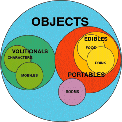

Building Blocks: PortablesFebruary 7, 2002 - Almost a month and a half has passed, but with the excitement of the new year now gone, I'm ready to return to the topic that was taking up much of this column during the waning months of 2001: Building Blocks. For those of you who missed the earlier installments, building blocks are those crucial elements required for the creation of most any online RPG — and those elements definitely required for the creation of prose-based online games of the sort I regularly discuss in this column. I've talked about five building blocks thus far — zones, maps, rooms, details, and names — and this week I've moving on to #6: portables.
In other words we're talking about those swords, gold pieces, ham sandwiches, suits of leather armor, bread rolls, and belt pouches that you haul around your favorite game. What's the Difference Between a Duck? In order to open up this discussion I need to reveal a secret of online game design: there's no difference between a duck. Phrasing that a sentiment a bit less nonsensically: in an online game an object is an object. Sure, you can divide objects into multiple classifications; classification, in fact, seems to be Mankind's main purpose on Earth. You can say some objects are rooms and some objects are portables, as I have in this series. And, that distinction can even be useful, because these remarkably similar objects will have slightly different characteristics based on their particular classification. But, it should be remembered that in a well-designed online game, all objects, no matter how different, will have a lot in common.  And, the similarities don't end there. As I've suggested, we can say that lots of different things are all objects — including characters, food, weapons, drink, rooms, mobiles, and slews of other thingies — but we can also say that some of these items are more similar to each other than others. Mobiles and characters might both be considered "volitionals" (i.e., they're alive), while food and drinks are generally considered "edibles" and those, together with weapons, would all be subsets of the portables we're discussing this week. It's an interlinking set of Venn diagrams. And, thanks to the magic of object-oriented programming, and inheritance, which we'll be starting in on next week, those similarities can actually be represented in a game too. That's all a somewhat long winded way of saying that my discussion of portables this week has a lot in common with my discussion of rooms in Trials, Triumphs & Trivialities #48, Building Blocks: Rooms. Sure, there are some practical differences between how rooms and portables tend to be used. To start off with, per my definition, portables can be carried about and rooms can't. Further, rooms tend to have exits which lead to different rooms, while portables don't. Conversely, portables tend to contain a lot of other information — like how much the item weighs, how nutritious it is, and how good of a weapon it is — which rooms don't. But, none of this is required (and most of it isn't implicit in the definition of portables). In a good object-oriented system, portables can do everything that a room can and vice-versa. Imagine:
Further, not only is the discussion of how to create rooms relevant, but so are the sub-topics that I've covered since, on details and names. We'll get to them ... (And, I'll offer a reminder of this discussion, of how similar all objects are, in the future when I get to the other main type of object, volitionals, but for now, onward.) The Flavor of the MonthHaving hopefully convinced you that all objects, including portables, are quite similar, I now want to take some time out to mention out how much differentiation there actually is among portables. It all comes back to my Venn diagram. All portables will share a lot of characteristics, but each will have its own unique space as well, usually related to its primary functionality. Here are some of the most common sorts of portable objects:
Any game designer could come up with numerous other types, subtypes and subsubtypes of portable, depending on what's important to his game. Poisons might be relevant in a Machiavellan game, magic items in high fantasy game, or spacecraft in a science fiction game. Hopefully, however, my listing of portable types has made two important points:
That means that if you have a robust object oriented system that allows you to give a portable a wide variety of characteristics, you should take advantage of it, and ask yourself "How good of a weapon is a beer bottle?" or "How nutritious is packing styrofoam?" Dynamic ObjectsWhen muddling over portables there's one last general question you should ask: how dynamic do you want them to be?. The most basic use of dynamism in objects has to do with decay. In short: do you want your clothing to get threadbare and your food to rot, like it would in the real world? Equally important, though, do you want players to be able to dynamically manipulate objects? Can a player take a white shirt and dye it red? Can a player take a pike, hack off the end, and turn it into a staff? Can a player emboss his name on the cover of a book he's purchased? Dynamism is a very, very hard topic, as I've discussed in Trials, Triumphs & Trivialities #26, The Dynamic Dilemma, Part One, Trials, Triumphs & Trivialities #28, The Dynamic Dilemma, Part Two, and Trials, Triumphs & Trivialities #29, The Dynamic Dilemma, Part Three. It can take considerable programming effort to make your portables more dynamic. We've done some of it at Skotos, creating what we call "Generic" objects which can be altered in a wide variety of ways, but the cost has been objects which are much more complex to create and revise. Nonetheless, it's a topic that you should at least think about when working on creating portables in your game. Object EconomiesSo you know all the main issues regarding portables, and you're now ready to start creating them, right? Actually, there's one big problem with portables that you need to consider too. I've discussed it before, at least in part, in Trials, Triumphs & Trivialities #3, Objectionable Economies. The summary of that article goes something like this: players will treat portables in way totally unlike they treat objects in the real world. This weirdness will tend to express itself in two ways: First, portables tend to be somewhat scarce in online games. As a result, they're highly valued. In real life, I might appreciate my bread rolls and star-shaped marzipans, but in an online game, they could be really, really important to my character due to their rarity. This means that players in online games will tend to go far out of their way to acquire portables and will be unusually upset if they lose them. Second, and closely related, is that players will hoard their portables. This is a side effect of the fact that many online games work hard to create a persistent environment (definitely, we do at Skotos). Through persistence, players can have permanent effects on the world, but on the downside they can accumulate stuff forever — including portables. This causes multiple problems, from out-of-whack economies to serious performance issues. On Castle Marrach one of the prime causes of lag is someone having too darned many portables in their room. As a StoryBuilder you have to figure out how to resolve the problem. Dynamic objects that go away over time are one good solution, be it by wear and tear, eating and drinking, or the fascist food and clothes police. Limits on how much can be held, stored, or worn is another method. In many ways, though, these problems aren't solvable; they're merely reflections of the difference between physical and virtual reality. Thus, you need to simply be aware of these effects when creating portable. They'll be valued and they'll be hoarded. Creating PortablesAll philosophy aside, how does one create a portable? As you'll see, some of the steps are repeats of Building Blocks we've already visited. 1. Select Your Portable Type The first thing you have to do is simply figure out what type of object you're going to be creating. By this I just mean, what is it most commonly used for? Does it tend to be a weapon, furniture, food, something else? This shouldn't restrict the ultimate usage of an object; as I note above, players will want to use all the objects you create in totally bizarre ways. However, it should help you isolate what's most important in the portable's design. 2. Consider Data Inheritance When discussing details many weeks ago, I danced around the idea of inheritance (or more specifically data inheritance). The basic concept is this: you can make my Venn diagram a reality in your game by having swords be a type of weapon and weapons be a type of portable and portables be a type of physical object... ad infinitum. We'll get into inheritance more next week, but for now understand that you might be able to match up the object "type", which you identified in step one, with a more generic object that you can inherit from. 3. Describe Your Portable You now know what type of portable you're creating, and may even be using inheritance to make its creation easier. The next step is to describe the thing. You need to start off by describing the prime detail, which is to say the object overall. Describing a portable is a lot simpler than describing a room, because it doesn't tend to have so many layers of complex description, but nonetheless the advice I offered in Trials, Triumphs & Trivialities #48, Building Blocks: Rooms remains accurate. 4. Detail Your Portable Portables tend to have details just like rooms do. A sword, for example, might include details for hilt, blade, guard, and runic engraving. A chest would surely have a lock detail. In general, portables will have less details than rooms do, but they'll be there, and there actually might be a fair number of them. Details for portables may be created using exactly the same methods I describe for detailing rooms in Trials, Triumphs & Trivialities #50, Building Blocks: Details. 5. Check All Your Names Of course, your portable needs a name, and every one of those details needs a name too. Consult the information on names in Trials, Triumphs & Trivialities #51, Building Blocks: Names. 6. Fill in Other Variables Portables do tend to be more complex than rooms in one way: they tend to contain a lot of other information, such as how much the portable weighs, how good of a weapons it is, how nutritious it is, and how much light it emits. When you're creating a portable, make sure you fill in as much of this other information as possible — even if it's inappropriate for the main type of the object — because it'll give players the opportunity to do those wacky things they'll try to do anyway. 7. Consider Method Inheritance And, that's it... except you should consider whether method inheritance should be used or not. What's that!? Something that I won't talk about for a good long time in this column. But, here's the basic gist: method inheritance describes what things do. For example, what a magic lamp does when you rub it or more generally what a torch does when you light it. When you can, you want to create standard ways for the actions to work (i.e., a "method") and then inherit that to all appropriate object types. But, for now, don't worry about this too much, other than knowing it's possible Because, you've already got a portable! Next week, on to the slightly simpler type of inheritance which I've also mentioned this time around: data inheritance. Then I want to take the Building Block abstractions of the last three months and explain a bit about how they work in reality, using Skotos' engine.
|
|||||||||||||||||||||||||||